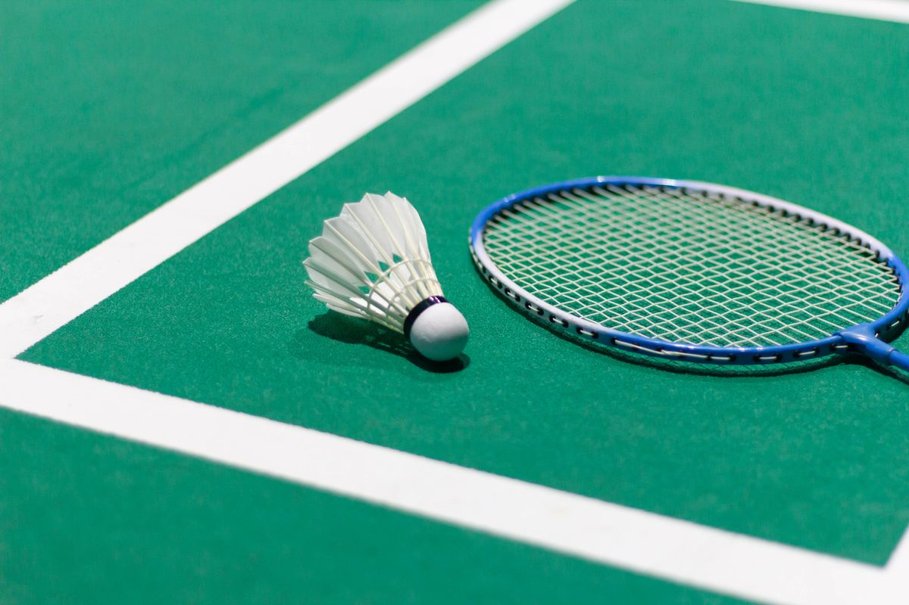

Home
Profile
Gallery
Article
Guestbook
|
|
|
|
|
Dunia Saya
LEARNING | GROWING | BECOMING |
|
Home |
Profile |
Gallery |
Article |
Guestbook |
Mengenal dunia dari sudut pandang saya.
01
MemasakCooking |
|
Saya suka memasak karena saya bisa mencoba berbagai resep dan membuat makanan sesuai selera saya. Bagi saya, memasak adalah kegiatan yang menyenangkan sekaligus memberi kesempatan untuk belajar hal baru. |
02
Bulu TangkisBadminton |
|
 |
Saya menyukai badminton karena olahraga ini seru dan membutuhkan konsentrasi. Selain menyenangkan, badminton juga mengajarkan saya tentang sportivitas, kedisiplinan, dan semangat untuk terus berkembang. |
03
Keamanan SiberCybersecurity |
|
Saya tertarik dengan cybersecurity karena ingin mempelajari lebih jauh tentang keamanan teknologi. Saya ingin memahami cara melindungi data dan mengenali berbagai ancaman digital. |
| "Tidak ingin sekadar terlihat mampu, tetapi benar-benar menjadi seseorang yang mampu." |
|
Personal Website
LEARNING | GROWING | BECOMING |